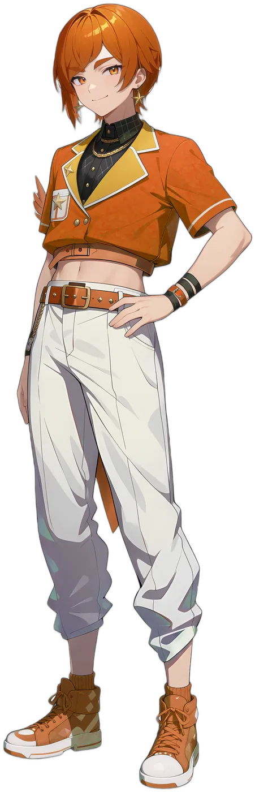
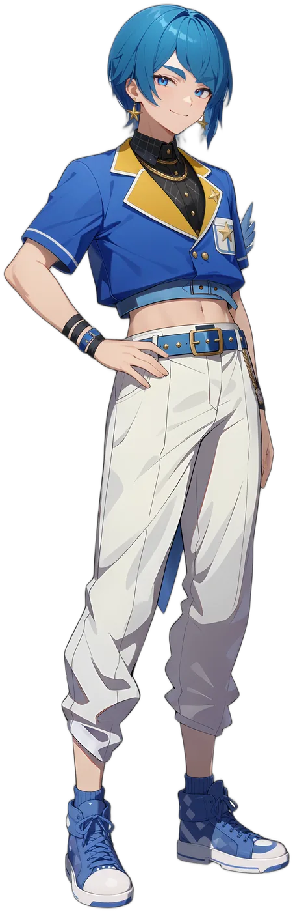
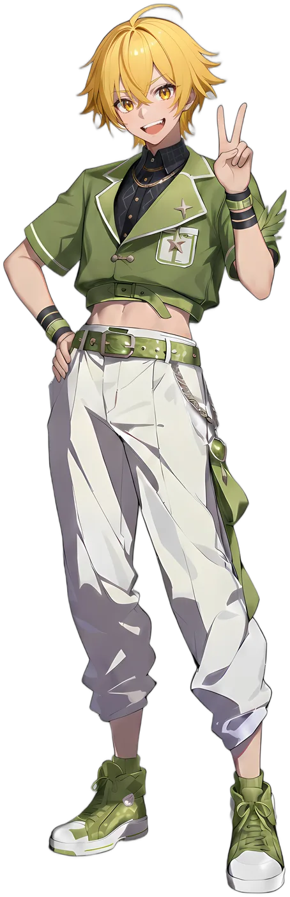
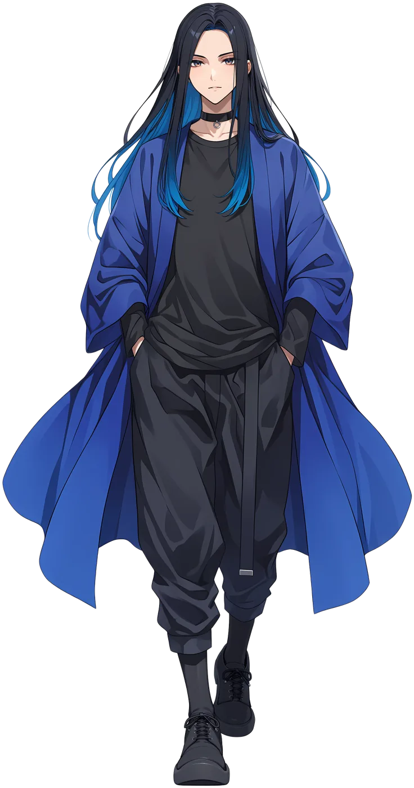
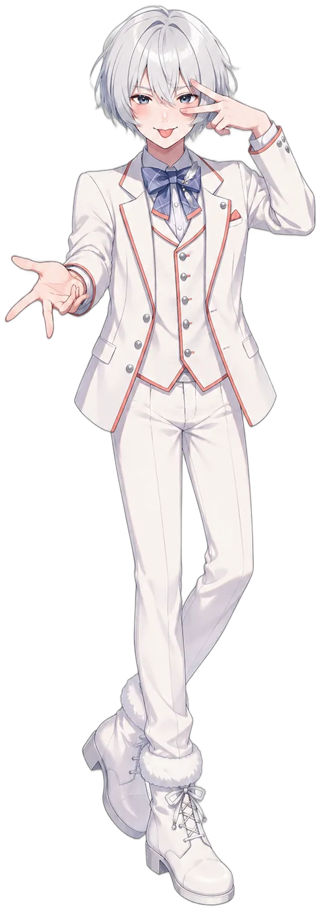

本能のまま、歌う。
Pick Upピックアップ曲01/05
 Pick Up
Pick Up PrisméaMV月日の奏Prisméa
PrisméaMV月日の奏Prisméa
New Release
Mood気分で選ぶ02/05
Unitsユニット03/05
 トリアティーク日本の身近な野鳥 × 和ロック
トリアティーク日本の身近な野鳥 × 和ロック- 川瀬帝翔
- 目代煎之介
- 燕谷航

 NocturnalFizzノクターナルフィズ猛禽兄弟 × ジャズ
NocturnalFizzノクターナルフィズ猛禽兄弟 × ジャズ- 月嶺隼瞳
- 月嶺有智
 Prisméaプリズメアシティポップ・デュオ
Prisméaプリズメアシティポップ・デュオ- 三条羽響
- 若本セイン
 Blackveil Harmonicブラックヴェイル・ハーモニックカラスたちの宴 × ロック
Blackveil Harmonicブラックヴェイル・ハーモニックカラスたちの宴 × ロック- 烏丸蓮司
- 笠木涼佑
- 筧傑

 ORYBIAオリビア14歳、地元アイドル四人組
ORYBIAオリビア14歳、地元アイドル四人組- 紅ましろ
- 菊井律
- 日滝ルイ
- 日滝ジョウ
Membersメンバー04/05


Newsお知らせ05/05
- INFO公式サイトOpen